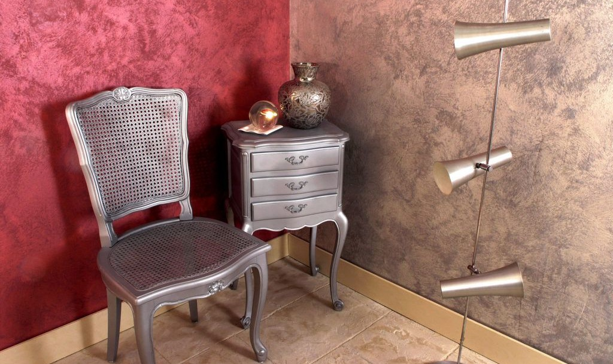
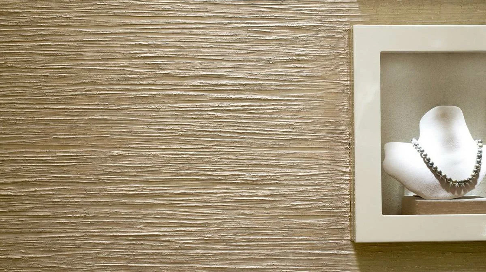

О материалах
Выбора строительных материалов для внутренней отделки стен великое множество, но наибольшей популярностью пользуются декоративные краски и фактурные штукатурки. Благодаря разнообразию фактур, цветов можно подобрать наиболее подходящий вариант, учитывая стилистику помещений, и даже сделать индивидуальный образец.
Декоративные краски

Такой стройматериал относится к лакокрасочным изделиям, так как имеет тонкий слой. Такая отделка славится отсутствием швов, гладкостью обработанных поверхностей, возможностью выбора материала с небольшой фактурой. Покрытие может быть однослойным или многослойным. Перед нанесением декоративной краски стены покрываются базой – колерованной грунтовкой. Настенные покрытия подготавливаются под покраску или «лампочку».
Наибольшей популярностью среди домовладельцев пользуется краска «перламутровый шелк». Фактурность покраски позволяет создавать красивый рельеф – мокрый, жатый, бархатный, классический шелк, вьюшки, морозные узоры и т.д. Для создания необычных узоров используется кельма, шайба либо шпатель.
Меньшим перламутром обладает материал с текстурой «велюр». Наносится материал аналогично шелку, но окончательное покрытие получается не глянцевым, а матовым. К числу наиболее матирующих вариантов относится замша, имитация кожи. Такие краски приятны на ощупь, отличаются прочностью, удобством ухода.
Не менее эффектно смотрится краска «перламутровый песок». Нанесение выполняется в нескольких техниках. Чаще всего специалисты пользуются кистью, что позволяет создавать эффект ливня или водопада. Песочная текстура создается из кварца, стекла или хрустальной крошки с добавлением блесток и светоотражающих материалов. Помимо классических вариантов, производители предлагают свои эксклюзивные линейки красок, отличающиеся способ нанесения и т.д.
Фактурные штукатурки

Толщина оштукатуренного слоя может варьироваться в пределах 2-3 мм. Это позволяет подготовить стены под дальнейшую отделку, скрыв незначительные дефекты во время проведения малярных работ. К особенностям фактурных штукатурок стоит отнести:
- Отсутствие швов и стыков.
- Длительные эксплуатационные сроки с высокой фиксацией.
- Сохранение текстуры в углах долгое время.
- Устойчивость к выгоранию.
Состоят штукатурки такого типа из минеральных, акриловых и силиконовых компонентов, отвечающих за устойчивость к пару, влаге, воде, прочность покрытия, эстетичность, экологичность. Многие производители предлагают собственные уникальные коллекции материалов, позволяющие значительно сэкономить средства. Наиболее распространенные виды декоративной штукатурки – травертин, мраморин, бетон, марроканка, венецианка. Большими сроками эксплуатации и повышенной прочностью обладают такие виды, как микроцемент и микробетон.
Вооружившись штукатуркой и инструментом, мастер создает фактурные рисунки, имитирующие натуральный камень (например, мраморные плиты, гранит, ракушечник и пр.), древесину, бамбук, тростниковые поросли, тканную текстуру, фактуру в стиле лофт (старение, ржавчина и другие). Также в ассортименте представлены самостоятельные фактуры, например, карта мира, шале, кракелюр, мазанка. Используя разные текстуры и цвета, можно создавать настоящие произведения искусства.
Дополнительные материалы
Чтобы оштукатуренные стены долго выглядели презентабельно, а само покрытие сохраняло свои свойства, мастера четко соблюдают технологию нанесения. Предварительно стены покрываются грунтовкой, закрепляется результат защитными составами. Каждый производитель предлагает свои сопутствующие товары, которые идеально будут сочетаться с конкретным покрытием.
Независимо от текстуры и вида, штукатурки наносятся в комплексе с грунтовкой глубокого проникновения. При фактурном оштукатуривании используется грунтовка с кварцем, что повышает адгезию состава. Также используются защитные материалы – лакокрасочные изделия, воски, пропитки. Такие стройматериалы практичны и добавляют художественности созданному покрытию. Универсальные составы могут быть натуральными, акриловыми, полиуретановыми, глянцевыми и матовыми, блестящими и пудровыми.